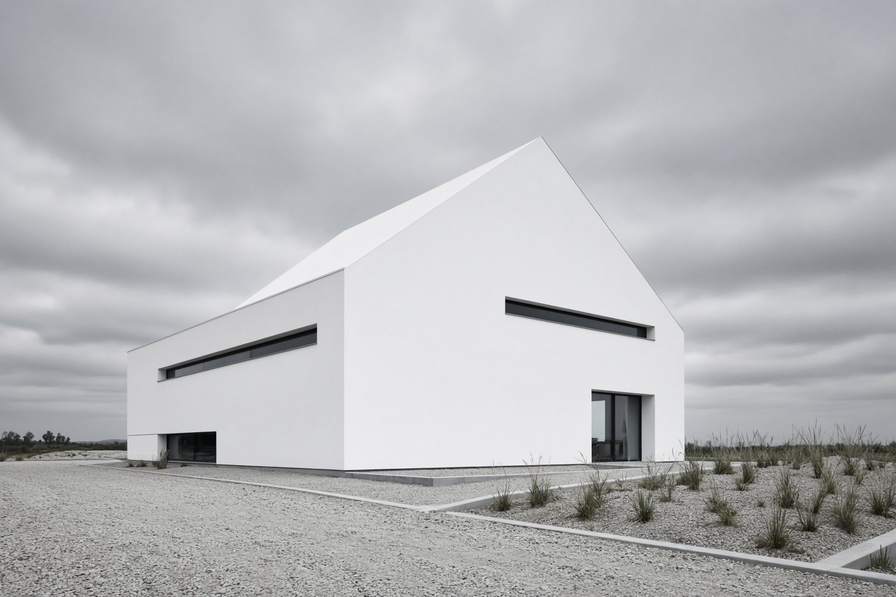
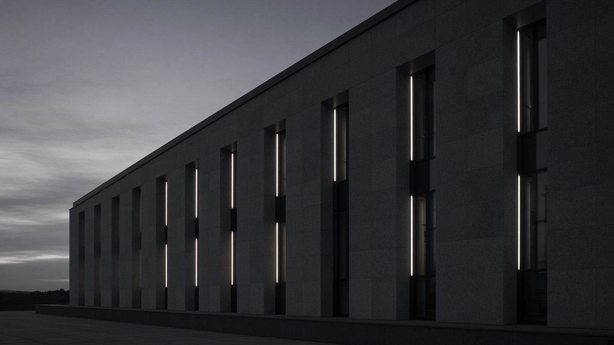

Ilustrativni prikazCAD/2025
Stambeni objekt — CAD obrada
Tlocrti, presjeci i pročelja usklađeni u CAD okruženju prema zadanim podlogama.

Projekti
Odabrani ilustrativni primjeri. DESCO ne objavljuje stvarne klijentske projekte ni reference bez suglasnosti.
Svi prikazi na ovoj stranici označeni su kao ilustrativni. Fotografije i opisi služe za razumijevanje vrste obrade, a ne kao popis stvarnih klijenata ili izvedenih objekata.